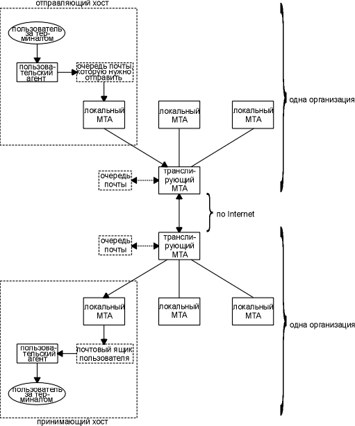

Глава 28 SMTP: простой протокол передачи почты
Электронная почта (e-mail), несомненно, одно из самых популярных приложений. [Caceres et al. 1991] показывает, что примерно половина всех TCP соединений занята передачей почтовых сообщений с исполььзованием простого протокола передачи почты (SMTP - Simple Mail Transfer Protocol). (С точки зрения количества переданных байт, по FTP соединениям передается значительно больше данных.) [Paxson 1993] обнаружил, что среднее почтовое сообщение содержит примерно 1500 байт данных, однако некоторые сообщения содержат мегабайты данных, потому что электронная почта иногда используется для посылки файлов.
На рисунке 28.1 показан обмен почтой с использованием TCP/IP.

Рисунок 28.1 Доставка электронной почты в Internet.
Пользователи общаются с пользовательскими агентами (user agent). В настоящее время существует очень много реализаций пользовательских агентов. Популярные пользовательские агенты для Unix это MH, Berkeley Mail, Elm и Mush.
Обмен почтой с использованием TCP осуществляется посредством агентов передачи сообщений (MTA - message transfer agent). Наиболее распространенные MTA для Unix систем это Sendmail. Пользователи обычно не общаются с MTA. В задачу системного администратора входит установка локального MTA.
В этой главе рассматривается обмен электронной почтой между двумя MTA с использованием TCP. Мы не будем рассматривать функционирование или принципы работы пользовательских агентов.
RFC 821 [Postel 1982] описывает протокол SMTP. А именно то, как два MTA общаются друг с другом по TCP соединению. RFC 822 [Crocker 1982] приводит формат сообщения электронной почты, которое передается между двумя MTA в соответствии с RFC 821.
При общении между двумя MTA используется NVT ASCII. Команды посылаются клиентом серверу, а сервер отвечает с помощью цифровых кодов и опциональных текстовых строк (для чтения человеком). Это несколько напоминает сценарий, который мы видели для FTP в предыдущей главе.
Клиент может послать серверу небольшое количество команд: меньше дюжины. (Для сравнения, FTP имеет более сорока команд.) Вместо того чтобы описывать команды одну за другой, мы начнем с простого примера, для того чтобы показать что происходит, когда отправляется почта.
Пошлем простое сообщение размером в одну строку и посмотрим, как осуществляется SMTP соединение. Для этого воспользуемся нашим пользовательским агентом с флагом -v, который передается транспортному агенту почты (Sendmail в данном случае). Когда указан этот флаг, MTA отображает все, что посылается и принимается по SMTP соединению. Строки, начинающиеся с >>>, это команды, посылаемые SMTP клиентом, а строки, начинающиеся с 3-циферного кода отклика, приходят от SMTP сервера. Ниже приводится интерактивная сессия:
sun % mail -v rstevens@noao.edu
запускаем
пользовательского агента
To: rstevens@noao.edu
это
вывод от пользовательского агента
Subject: testing
затем
нас просят ввести тему сообщения
пользовательский
агент добавляет одну пустую строку между
заголовком и телом
1, 2, 3.
это
тело сообщения
.
вводим
точку в начале строки, сообщающую, что ввод
сообщения завершен
Sending letter ... rstevens@noao.edu...
отладочный
вывод от пользовательского агента
следующий
вывод от MTA (Sendmail)
Connecting to mailhost via ether...
Trying 140.252.1.54... connected.
220 noao.edu Sendmail 4.1/SAG-noao.G89 ready at Mon, 19 Jul 93 12:47:34 MST
>>> HELO sun.tuc.noao.edu.
250 noao.edu Hello sun.tuc.noao.edu., pleased to meet you
>>> MAIL From:<rstevens@sun.tuc.noao.edu>
250 <rstevens@sun.tuc.noao.edu>... Sender ok
>>> RCPT To:<rstevens@noao.edu>
250 <rstevens@noao.edu>... Recipient ok
>>> DATA
354 Enter mail, end with "." on a line by itself
>>> .
250 Mail accepted
>>> QUIT
221 noao.edu delivering mail
rstevens@noao.edu... Sent
sent.
это
вывод от пользовательского агента
Для отправки почты было использовано всего пять SMTP команд: HELO, MAIL, RCPT, DATA и QUIT.
Команда mail запускает пользовательского агента. Затем необходимо ввести тему сообщения, после чего можно печатать тело сообщения. Ввод точки в начале строки завершает сообщение, и пользовательский агент передает почту в MTA для доставки.
Клиент осуществляет активное открытие на TCP порт 25, после чего ожидает приветственного сообщения (отклик с кодом 220) от сервера. Ответ сервера должен начинаться с полного имени домена хоста сервера: noao.edu в данном примере. (Обычно вместе с цифровым кодом отклика возвращается необязательный текст. Здесь требуется имя домена.)
Затем клиент идентифицирует себя с использованием команды HELO. В качестве аргумента указывается полное имя домена хоста клиента: sun.tuc.noao.edu.
Команда MAIL идентифицирует автора сообщения (или отправителя). Следующая команда, RCPT, идентифицирует получателя. Если сообщение предназначено нескольким получателям, может быть исполнено несколько команд RCPT.
Клиент отправляет содержимое почтового сообщения с использованием команды DATA. Строка, содержащая только точку, указывает на конец сообщения. Последняя команда, QUIT, прекращает обмен почтой.
На рисунке 28.2 приведена временная диаграмма SMTP соединения между отправителем SMTP (клиент) и получателем SMTP (сервер). Мы удалили все связанное с установлением и разрывом соединения, а также объявления размера окна.
В этом примере пользовательский агент отправляет сообщение длиной в одну строку ("1, 2, 3."), однако в сегменте 12 передается 393 байта данных. Следующие 12 строк включают в себя 393 байта, которые были посланы клиентом:
Received: by sun.tuc.noao.edu. (4.1/SMI-4.1)
id AA00502; Mon, 19 Jul 93 12:47:32
MST
Message-Id: <9307191947.AA00502@sun.tuc.noao.edu.>
From: rstevens@sun.tuc.noao.edu (Richard Stevens)
Date: Mon, 19 Jul 1993 12:47:31 -0700
Reply-To: rstevens@noao.edu
X-Phone: +1 602 676 1676
X-Mailer: Mail User's Shell (7.2.5 10/14/92)
To: rstevens@noao.edu
Subject: testing
1, 2, 3.

Рисунок 28.2 Принцип доставки почты SMTP.
MTA добавляет первые три строки, а также Received: и Message-Id:, а следующие девять строк генерируются пользовательским агентом.
Минимальные SMTP реализации поддерживают восемь команд. Мы видели пять из них в предыдущем примере: HELO, MAIL, RCPT, DATA и QUIT.
Команда RSET прекращает текущую передачу почты и заставляет оба конца "сброситься". Любая сохраненная информация об отправителе, получателе или содержимое почты уничтожается.
Команда VRFY позволяет клиенту попросить отправителя проверить адрес получателя, не отправляя ему почту. Этим часто пользуются системные администраторы, чтобы вручную определить проблемы с доставкой почты. Мы увидим, как это делается, в следующем разделе.
Команда NOOP не делает ничего, однако заставляет сервер ответить, что все нормально, а именно откликом с кодом 200.
Существуют также дополнительные, необязательные команды. EXPN расширяет список почты и часто используется системными администраторами, так же как и VRFY. Более того, большинство версий Sendmail обрабатывают эти две команды одинаково.
Версия 8 Sendmail в 4.4BSD больше не обрабатывает одинаково эти две команды. VRFY не расширяет псевдонимы и не отслеживает файлы .forward.
Команда TURN позволяет клиенту и серверу поменяться ролями, чтобы послать почту в обратном направлении, не разрывая TCP соединение и не создавая новое. (Sendmail не поддерживает эту команду.) Существуют еще три команды (SEND, SOML и SAML), которые очень редко реализуются и призваны заменить собой команду MAIL. Эти три команды в своих комбинациях позволяют доставлять почту непосредственно на пользовательский терминал (если пользователь находится терминалом в системе) или складывать ее в почтовый ящик получателя.
Конверты, заголовки и тело
Электронная почта состоит из трех частей.
MAIL From:<rstevens@sun.tuc.noao.edu>RCPT To:<rstevens@noao.edu>
RFC 821 определяет содержимое и интерпретацию конверта, а также протокол, который используется для обмена почтой по TCP соединению.
Затем пользовательский агент берет то, что было указано в качестве тела сообщения, добавляет некоторые заголовки и передает результат в MTA. MTA добавляет свои заголовки, добавляет конверт и посылает результат другому MTA.
Термин содержимое часто используется, чтобы описать комбинацию заголовков и тела. Содержимое посылается клиентом с использованием команды DATA.
Первая информационная строка от локального MTA в примере была следующей: "Connecting to mailhost via ether".
Это объясняется тем, что система автора сконфигурирована таким образом, чтобы посылать всю нелокальную исходящую почту на транслирующую машину для дальнейшей доставки. Так сделано по двум причинам. Во-первых, упрощается конфигурацию всех MTA, кроме MTA транслирующей системы. (Конфигурация MTA не проста, каждый, кто когда-либо работал с Sendmail, может это подтвердить.) Во-вторых, одна система в организации может выступать в роли почтового ретранслятора, возможно пряча тем самым все остальные индивидуальные системы.
В нашем примере транслирующая система имеет имя хоста mailhost в локальном домене (.tuc.noao.edu), а все индивидуальные системы сконфигурированы таким образом, чтобы посылать свою почту на этот хост. Мы можем исполнить команду host, чтобы посмотреть, как это имя определено в DNS:
sun % host mailhost
mailhost.tuc.noao.edu CNAME noao.edu
каноническое
имя
noao.edu A 140.252.1.54
ее
реальный IP адрес
Если хост, который используется в качестве ретранслирующего, в будущем изменится, необходимо только сменить его DNS имя - конфигурация почты всех индивидуальных систем не изменится.
Большинство организаций в настоящее время используют транслирующие системы. На рисунке 28.3 показана упрощенная схема почты в Internet (рисунок 28.2), причем сделано предположение, что большинство отправляющих хостов и окончательные получающие хосты используют транслирующие хосты.
Между отправителем и получателем присутствует четыре MTA. Локальный MTA на хосте отправителя просто доставляет почту на свой транслирующий MTA. (Этот транслирующий MTA должен иметь имя mailhost в домене организации.) Здесь SMTP использует локальные сети организации. Затем транслирующий MTA организации отправителя посылает почту по Internet на транслирующий MTA организации получателя. Другие транслирующие MTA доставляют почту на хост получателя после общения с локальными MTA хоста получателя. Все MTA в примере используют SMTP, хотя существует возможность того, что на этом пути могут встретиться и другие протоколы доставки.
NVT ASCII
Одна из характеристик SMTP заключается в том, что он использует NVT ASCII абсолютно везде: в конверте, заголовке и теле сообщения. Как мы сказали в разделе "Протокол Telnet" главы 26, NVT ASCII это 7-битная кодировка символов, символы при этом передаются как 8-битные байты, у которых старший бит установлен в 0.

Рисунок 28.3 Электронная почта по Internet с транслирующими системами на обоих концах.
В разделе "Будущее SMTP" этой главы мы обсудим некоторые более новые характеристики почты в Internet, расширенный SMTP и мультимедийную почту (MIME), которая позволяет отправлять и принимать звуковую и видео информацию. Мы увидим, что MIME использует NVT ASCII в качестве конверта, заголовка и тела, а изменения касаются только пользовательских агентов.
Интервалы между ретрансляциями
Когда пользовательский агент передает новое почтовое сообщение своему MTA, попытка доставить сообщение обычно осуществляется немедленно. Если доставить сообщение не удалась, MTA поставит сообщение в очередь и повторит попытку позже.
Требования к хостам Host Requirements RFC рекомендует устанавливать первоначальный тайм-аут по крайней мере в 30 минут. Отправитель должен повторять свои попытки по меньшей мере 4-5 дней. Более того, если сбои в доставке происходят часто (получатель вышел из строя или произошла временная потеря сетевого соединения), имеет смысл делать две попытки установить соединение в течение первого часа, когда сообщение находится в очереди.
В предыдущем разделе показана обычная доставка почты; сейчас рассмотрим, как для доставки почты записи используются MX, а также проиллюстрируем работу команд VRFY и EXPN.
Записи MX: хост не подключен непосредственно к Internet
В разделе "Записи ресурсов" главы 14 мы сказали, что один из типов записи ресурса в DNS используется для обмена почты и называется записями MX. В следующем примере мы покажем, как используются записи MX, для отправки почты на хосты, не подключенные к Internet непосредственно. RFC 974 [Partridge 1986] описывает, как MTA обрабатывает записи MX.
Хост mlfarm.com не подключен к Internet, однако имеет MX запись, указывающую на перенаправителя почты, который, в свою очередь, находится в Internet:
sun % host -a -v -t mx mlfarm.com
The following answer is not authoritative:
mlfarm.com
86388
IN MX
10 mercury.hsi.com
mlfarm.com
86388
IN MX
15 hsi86.hsi.com
Additional information:
mercury.hsi.com
86388
IN A
143.122.1.91
hsi86.hsi.com
172762
IN A
143.122.1.6
Здесь показаны две записи MX, каждая с различной степенью предпочтительности. Мы ожидаем, что MTA начнет с меньшего из двух значений предпочтительности.
Следующий скрипт показывает, как почта будет послана этому хосту:
sun % mail -v ron@mlfarm.com
флаг
-v, чтобы посмотреть, что делает MTA
To: ron@mlfarm.com
Subject: MX test message
здесь
печатается тело сообщения (не показано)
.
точка
в конце строки завершает сообщение
Sending letter ... ron@mlfarm.com...
Connecting to mlfarm.com via tcp...
mail exchanger is mercury.hsi.com
найдена
запись MX
Trying 143.122.1.91... connected.
делается
первая попытка с минимальной
предпочтительностью
220 mercury.hsi.com ...
здесь
происходит обычная доставка почты SMTP
MTA определил, что хост назначения имеет MX запись и использует MX запись с минимальным значением предпочтительности.
Перед запуском этого примера на хосте sun была изменена конфигурация таким образом, чтобы при отправке почты не использовался обычный транслирующий хост, поэтому мы видим обмен почтой с хостом назначения. Также в конфигурации было сказано использовать DNS сервер на хосте noao.edu (к которому можно получить доступ через SLIP канал с дозвоном). Благодаря этому, с использованием tcpdump, мы можем посмотреть и передачу почты, и DNS траффик на SLIP канале. На рисунке 28.4 показана начальная часть вывода команды tcpdump.
1 0.0
sun.1624
> noao.edu.53: 2+ MX? mlfarm.com. (28)
2 0.445572 (0.4456)
noao.edu.53 > sun.1624: 2*
2/0/2 MX
mercury.hsi.com.
10 (113)
3 0.505739 (0.0602)
sun.1143 >
mercury.hsi.com.25: S 1617536000:1617536000(0)
win
4096
4 0.985428 (0.4797)
mercury.hsi.com.25 >
sun.1143: S 1832064000:1832064000(0)
ack
1617536001 win 16384
5 0.986003 (0.0006)
sun.1143 >
mercury.hsi.com.25: . ack 1 win 4096
6 1.735360 (0.7494)
mercury.hsi.com.25 >
sun.1143: P 1:90(89) ack 1 win 16384
Рисунок 28.4 Посылка почты на хост, который использует MX записи.
В строке 1 MTA запрашивает свой DNS сервер о MX записи для mlfarm.com. Знак плюс, следующий за 2, означает, что установлен флаг "необходима рекурсия". Отклик в строке 2 имеет установленным бит полномочности (звездочка, следующая за 2) и содержит 2 записи ресурса (RR) ответа (два имени MX хостов), 0 записей ресурса RR прав доступа и две дополнительные RR (IP адреса двух хостов).
В строках 3-5 устанавливается TCP соединение с SMTP сервером на хосте mercury.hsi.com. Первоначальный отклик сервера (220) показан в строке 6.
Каким-либо образом хост mercury.hsi.com должен доставить это почтовое сообщение в пункт назначения - mlfarm.com. Протокол UUCP является распространенным способом обмена почтой с MX узлами для систем, которые не подключены к Internet.
В этом примере MTA запрашивает MX запись, получает ее и посылает почту. К сожалению, взаимодействие между MTA и DNS может отличаться в зависимости от реализации. RFC 974 указывает, что MTA должен сначала запросить MX записи, и если они не найдены, попробовать доставить почту на хост назначения (то есть запросить DNS на предмет записи A для хоста, его IP адрес). MTA должен также поинтересоваться записями CNAME в DNS (канонические имена).
Например, если мы пошлем почту хосту rstevens@mailhost.tuc.noao.edu с BSD/386 хоста, MTA (Sendmail) проделает следующее.
- Sendmail запрашивает DNS, существуют ли записи CNAME для хоста mailhost.tuc.noao.edu. Мы видим, что записи CNAME существуют:
mailhost.tuc.noao.edu CNAME noao.edu
noao.edu MX noao.edu
Запрос CNAME не осуществляется для данных, возвращенных в MX записи (noao.edu). Данные в MX записи не могут быть псевдонимами - они должны быть именем хоста, который имеет запись A.
Версия Sendmail, распространяемая с SunOS.4.1.3, обращается к DNS только с запросами о существовании MX записей и сразу прекращает все попытки, если MX запись не найдена.
MX записи: хосты, которые выключены
Другое использование MX записи заключается в том, чтобы найти альтернативного получателя почты, если хост назначения выключен. Если мы посмотрим DNS записи для нашего хоста sun, то увидим, что он имеет две MX записи:
sun % host -a -v -t mx sun.tuc.noao.edu
sun.tuc.noao.edu 86400
IN MX 0
sun.tuc.noao.edu
sun.tuc.noao.edu 86400
IN MX 10 noao.edu
Additional information:
sun.tuc.noao.edu 86400
IN A
140.252.1.29
sun.tuc.noao.edu 86400
IN A
140.252.13.33
noao.edu
86400
IN A
140.252.1.54
MX запись с минимальным уровнем предпочтительности указывает, что сначала надо попробовать доставить почту непосредственно на хост. Следующее значение предпочтительности указывает на необходимость осуществить доставку почты на хост noao.edu.
В следующем скрипте мы посылаем почту сами себе на хост sun.tuc.noao.edu, с хоста vangogh.cs.berkeley.edu, предварительно выключив SMTP сервер назначения. Когда на порт 25 прибывает запрос на соединение, TCP должен ответить сбросом (RST), так как не существует процесса, который может осуществить пассивное открытие для этого порта.
vangogh % mail -v rstevens@sun.tuc.noao.edu
A test to a host that's down.
.
EOT
rstevens@sun.tuc.noao.edu...Connecting to sun.tuc.noao.edu.(smtp)...
rstevens@sun.tuc.noao.edu...Connecting to noao.edu.(smtp)...
220 noao.edu ...
дальше
идет обычная передача почты SMTP
Мы видим, что MTA старается установить контакт с sun.tuc.noao.edu, затем прекращает попытки и устанавливает контакт с noao.edu.
На рисунке 28.5 показан вывод команды tcpdump, где показано, как TCP отвечает сбросом (RST) на входящие SYN.
1 0.0
vangogh.3873
> 140.252.1.29.25: S 2358303745:2358303745(0) ...
2 0.000621 (0.0006) 140.252.1.29.25 > vangogh.3873: R
0:0(0) ack 2358303746 win 0
3 0.300203 (0.2996) vangogh.3874 > 140.252.13.33.25: S
2358367745:2358367745(0) ...
4 0.300620 (0.0004) 140.252.13.33.25 > vangogh.3874: R
0:0(0) ack 2358367746 win 0
Рисунок 28.5 Попытки установить контакт с неработающим SMTP сервером.
В строке 1 vangogh отправляет SYN на порт 25 на первый IP адрес хоста sun: 140.252.1.29. В строке 2 мы видим отказ. SMTP клиент на vangogh пробует следующий IP адрес sun: 140.252.13.33 (строка 3), что также вызывает возврат RST (строка 4).
SMTP клиент не старается изменить свое поведение в результате ошибки, полученной на активное открытие, которое он осуществлял в строке 1, именно поэтому он старается обратиться к другому IP адресу в строке 2. Если ошибка была подобна "хост недоступен" (host unreachable) для первой попытки, возможно, что вторая попытка сработает.
Если причина, по которой активное открытие SMTP клиента не сработало, заключается в том, что хост выключен, мы увидим, что клиент будет повторно выдавать SYN на IP адрес 140.252.1.29 в течение 75 секунд (примерно так же, как на рисунке 18.6), затем отправит еще три SYN на IP адрес 140.252.13.33 в течение других 75 секунд. После 150 секунд клиент перейдет к следующей MX записи с более высоким значением предпочтительности.
Команды VRFY и EXPN
Команда VRFY проверяет, в порядке ли адрес получателя, не посылая при этом реальной почты. EXPN предназначена для расширения почтового псевдонима до почтового адреса. Большинство SMTP реализаций (такие как Sendmail) воспринимают эти команды абсолютно одинаково, однако мы уже отмечали, что более новые версии Sendmail проводят различие между ними.
В качестве простого теста мы можем подсоединиться к более новой версии Sendmail и посмотреть эти различия. (Мы удалили вывод клиента Telnet.)
sun % telnet vangogh.cs.berkeley.edu 25
220-vangogh.CS.Berkeley.EDU Sendmail 8.1C/6.32 ready at Tue, 3 Aug 1993 14:59:12 -0700
220 ESMTP spoken here
helo bsdi.tuc.noao.edu
250 vangogh.CS.Berkeley.EDU Hello sun.tuc.noao.edu [140.252.1.29], pleased to meet you
vrfy nosuchname
550 nosuchname... User unknown
vrfy rstevens
250 Richard Stevens <rstevens@vangogh.CS.Berkeley.EDU>
expn rstevens
250 Richard Stevens <rstevens@noao.edu>
Во-первых, обратите внимание на то, что мы специально напечатали неверное имя хоста для команды HELO: bsdi вместо sun. Большинство SMTP серверов берут IP адрес клиента и осуществляют запрос указателя DNS (глава 14, раздел "Запросы указателя"), после чего сравнивают имена хостов. Это позволяет серверу зарегистрировать соединение клиента, основываясь на его IP адресе, а не на имени, которое пользователь может указать неверно. Некоторые серверы отвечают юмористическими сообщениями, такими как "вы шарлатан" или "почему бы вам не позвонить самому себе...". В этом примере мы видели, что сервер просто напечатал реальное имя домена из запроса указателя вместе с IP адресом.
Затем мы вводим команду VRFY для несуществующего имени, на что сервер отвечает ошибкой 550. Затем мы печатаем существующее имя, а сервер отвечает именем пользователя на локальном хосте. Затем мы пробуем команду EXPN и получаем другой отклик. Команда EXPN определяет, что почта для этого пользователя будет перенаправлена и печатает адрес перенаправления.
На многих хостах команды VRFY и EXPN отключены, может быть с точки зрения секретности и иногда из-за того, что администраторы считают, что в этом находится какая-то дырка в секретности. Например, мы можем попробовать воспользоваться этими командами на SMTP сервере Белого Дома (США):
sun % telnet whitehouse.gov 25
220 whitehouse.gov SMTP/smap Ready.
helo sun.tuc.noao.edu
250 (sun.tuc.noao.edu) pleased to meet you.
vrfy clinton
500 Command unrecognized
expn clinton
500 Command unrecognized
В настоящее время почта Internet заметно меняется. Вспомните, что почта Internet состоит из трех частей: конверт, заголовки и тело сообщения. Появляются новые SMTP команды, которые изменяют конверт, в заголовках могут быть использованы не-ASCII символы, а к телу добавляются структуры (MIME). В этом разделе мы по порядку рассмотрим расширение каждой из трех частей.
Изменения в конверте: расширенное SMTP
RFC 1425 [Klensin et al. 1993a] определяет основные расширения для SMTP. В результате получилось то, что называется расширенным SMTP (ESMTP - extended SMTP). Как и другие новые характеристики (уже описанные в тексте), эти изменения добавляются таким образом, что новые версии совместимы со старыми.
Клиент, которому необходимо использовать новые характеристики, открывает сессию с сервером с использованием команды EHLO вместо команды HELO. Совместимый сервер отвечает откликом с кодом 250. Этот отклик обычно содержит несколько строк, причем каждая строка содержит ключевое слово и дополнительный аргумент. Ключевые слова указывают на расширения SMTP, поддерживаемые сервером. (В случае многострочного отклика во всех строках кроме последней, между цифровым кодом и текстом стоит дефис. В последней строке между цифровым кодом и текстом стоит пробел.) Вновь появляющиеся расширения будут описаны в RFC и будут зарегистрированы в IANA.
Ниже показаны начальные стадии соединений с четырьмя SMTP серверами, три из которых поддерживают расширенный SMTP. Соединение осуществляется с помощью Telnet, однако весь вывод Telnet клиента удален.
sun % telnet vangogh.cs.berkeley.edu 25
220-vangogh.CS.Berkeley.EDU Sendmail 8.1C/6.32 ready at Mon, 2 Aug 1993 15:47:48 -0700
220 ESMTP spoken here
ehlo sun.tuc.noao.edu
250-vangogh.CS.Berkeley.EDU Hello sun.tuc.noao.edu [140.252.1.29], pleased to meet you
250-EXPN
250-SIZE
250 HELP
Этот сервер выдает многострочный отклик 220 в виде приветственного сообщения. Расширенные команды, приведенные в отклике 250, на команду EHLO это EXPN, SIZE и HELP. Первая и последняя из исходной спецификации RFC 821, однако они являются дополнительными командами (необязательными). Сервера ESMTP помимо дополнительных команд из RFC 821 поддерживают также и более новые команды.
Ключевое слово SIZE означает, что сервер поддерживает то, что описано в RFC 1427 [Klensin, Freed, and Moore 1993]. Подобное расширение позволяет клиенту указывать размер сообщения в байтах в командной строке MAIL FROM. Это позволяет серверу проверить, что он воспримет сообщение определенного размера, перед тем как клиент начнет его посылать. Эта команда была добавлена, так как в последнее время появляется все больше почтовых сообщений содержащих не-ASCII строки (например, бинарные или звуковые файлы).
Следующий хост также поддерживает ESMTP. Отклик 250 указывает, что поддерживаемое ключевое слово SIZE содержит дополнительный аргумент. Он указывает на то, что этот сервер может воспринимать сообщения размером до 461 мегабайта.
sun % telnet ymir.claremont.edu 25
220 ymir.claremont.edu -- Server SMTP (PMDF V4.2-13 #4220)
ehlo sun.tuc.noao.edu
250-ymir.claremont.edu
250-8BITMIME
250-EXPN
250-HELP
250-XADR
250 SIZE 461544960
Ключевое слово 8BITMIME определено в RFC 1426 [Klensin et al. 1993b]. Оно позволяет клиенту добавить ключевое слово BODY к команде MAIL FROM, указывая тем самым, содержит ли тело сообщения NVT ASCII символы (по умолчанию) или 8-битные данные. Если клиент не получил ключевое слово 8BITMIME от сервера в ответ на команду EHLO, клиенту запрещено посылать любые другие символы кроме NVT ASCII. (Когда мы будем говорить о MIME в этом разделе, то увидим, что для MIME не требуется 8-битный SMTP транспорт.)
Этот сервер также объявил ключевое слово XADR. Любое ключевое слово, которое начинается на X, обозначает местное расширение SMTP.
Следующий сервер также поддерживает ESMTP, объявляя ключевые слова HELP и SIZE, которые мы уже видели. Он также поддерживает три локальных расширения, которые начинаются на X.
sun % telnet dbc.mtview.ca.us 25
220 dbc.mtview.ca.us Sendmail 5.65/3.1.090690, it's Mon, 2 Aug 93 15:48:50 -0700
ehlo sun.tuc.noao.edu
250-Hello sun.tuc.noao.edu, pleased to meet you
250-HELP
250-SIZE
250-XONE
250-XVRB
250 XQUE
И в конце мы посмотрим, что произойдет, когда клиент пытается использовать ESMTP, выдав команду EHLO на сервер, который это не поддерживает.
sun % telnet relay1.uu.net 25
220 relay1.UU.NET Sendmail 5.61/UUNET-internet-primary ready at Mon, 2 Aug 93 18:50:27 -0400
ehlo sun.tuc.noao.edu
500 Command unrecognized
rset
250 Reset state
Вместо того чтобы получить отклик 250 на команду EHLO, клиент получил отклик 500. Затем клиент должен исполнить команду RSET, а уже затем команду HELO.
Изменения в заголовках: использование не-ASCII символов
RFC 1522 [Moore 1993] указывает способы передачи не-ASCII символов в заголовках сообщений, основанных на RFC 822. Основное назначение - разрешить использовать дополнительные символы в именах отправителя и получателя, а также в теме сообщения.
Поле заголовка может содержать закодированные слова. При этом формат следующий:
=? charset ? encoding ? encoded text ?=
charset это спецификация набора символов. Приемлемые значения это две строки us-ascii и iso-8859-X, где X это одна цифра, как, например, iso-8859-1.
encoding это один символ, который указывает метод кодирования. Поддерживаются два значения.
- Q означает quoted-printable и предназначен для латинского набора символов. Большинство символов передаются как NVT ASCII (старший бит установлен в 0, естественно). Любой отправляемый символ, у которого восьмой бит не равен 0, посылается как три символа: первый символ =, после чего следуют две шестнадцатиричные цифры. Например, символ й (бинарное 8-битное значение которого равно 0xe9) передается как три символа =E9. Пробелы всегда отправляются либо как подчеркивание, либо как три символа =20. Такое кодирование используется для текста, который в основном состоит из ASCII с небольшим количеством специальных символов.
- B означает кодирование по основанию 64. Три последовательных байта текста (24 бита) кодируются как четыре 6-битных значения. Для того, чтобы представить каждое из возможных 6-битных значений, используется, 64 символа NVT ASCII, как показано на рисунке 28.6.
| 6-битное значение | ASCII символ | 6-битное значение | ASCII символ | 6-битное значение | ASCII символ | 6-битное значение | ASCII символ |
| 0 | A | 10 | Q | 20 | g | 30 | w |
| 1 | B | 11 | R | 21 | h | 31 | x |
| 2 | C | 12 | S | 22 | i | 32 | y |
| 3 | D | 13 | T | 23 | j | 33 | z |
| 4 | E | 14 | U | 24 | k | 34 | 0 |
| 5 | F | 15 | V | 25 | l | 35 | 1 |
| 6 | G | 16 | W | 26 | m | 36 | 2 |
| 7 | H | 17 | X | 27 | n | 37 | 3 |
| 8 | I | 18 | Y | 28 | o | 38 | 4 |
| 9 | J | 19 | Z | 29 | p | 39 | 5 |
| a | K | 1a | a | 2a | q | 3a | 6 |
| b | L | 1b | b | 2b | r | 3b | 7 |
| c | M | 1c | c | 2c | s | 3c | 8 |
| d | N | 1d | d | 2d | t | 3d | 9 |
| E | O | 1e | e | 2e | u | 3e | + |
| f | P | 1f | f | 2f | v | 3f | / |
Рисунок 28.6 Кодирование 6-битных значений (кодирование на основе 64).
Когда количество символов, которые необходимо кодировать, не кратно трем, в качестве символов заполнения используются знаки равно.
Следующий пример этих двух типов кодирования взят из RFC 1522:
From: =?US-ASCII?Q?Keith_Moore?= <moore@cs.utk.edu>
To: =?ISO-8859-1?Q?Keld_J=F8rn_Simonsen?= <keld@dkuug.dk>
CC: =?ISO-8859-1?Q?Andr=E9_?= Pirard <PIRARD@vm1.ulg.ac.be>
Subject: =?ISO-8859-1?B?SWYgeW91IGNhbiByZWFkIHRoaXMgeW8=?=
=?ISO-8859-2?B?dSB1bmRlcnN0YW5kIHRoZSBleGFtcGxlLg==?=
Пользовательский агент имеет возможность обработать эти заголовки, в результате чего получится следующий вывод:
From: Keith Moore <moore@cs.utk.edu>
To: Keld Jorn Simonsen <keld@dkuug.dk>
CC: Andre Pirard <PIRARD@vm1.ulg.ac.be>
Subject: If you can read this you understand the example.
Для того чтобы посмотреть, как работает кодирование на основе 64, посмотрите на первые 4 закодированных символа в строке темы: SWYg. Напишем 6-битные значения для этих 4 символов в соответствии с рисунком 28.6 (S=0x12, W=0x16, Y=0x18 и g=0x20) в двоичном виде:
010010 010110 011000 100000
Затем перегруппируем эти 24 бита в три 8-битных байта:
01001001 01100110 00100000
=0x49 =0x66 =0x20
которые в виде ASCII представляют собой I, f и пробел.
Изменения в теле сообщения: Многофункциональные расширения почты Internet (MIME - Multipurpose Internet Mail Extensions)
Мы говорили, что RFC 822 описывает тело сообщения как строки NVT ASCII текста, без структуры. RFC 1521 [Borenstein and Freed 1993] определяет расширения, которые позволяют вводить структуру в тело сообщения. Это называется многофункциональным расширением почты Internet (MIME - Multipurpose Internet Mail Extensions).
MIME не требует тех расширений, что мы описали ранее в этом разделе (расширенный SMTP или не-ASCII заголовки). MIME просто добавляет некоторые новые заголовки (в соответствии с RFC 822), которые сообщают получателю о структуре тела сообщения. Тело сообщения может передаваться с использованием NVT ASCII, вне зависимости от содержимого почты. Несмотря на это некоторые из расширений, которые мы только что описали, могут быть вполне уместны при использовании вместе с MIME - команда SIZE расширенного SMTP, так как MIME сообщения могут быть довольно большими, и не-ASCII заголовки, эти расширения не требуются для MIME. Все что требуется для обмена MIME сообщениями с другой стороной - необходимо, чтобы на обоих концах присутствовали пользовательские агенты, которые понимают MIME. На промежуточных MTA не требуется никаких изменений.
MIME определяет пять новых полей заголовков:
Mime-Version:
Content-Type:
Content-Transfer-Encoding:
Content-ID:
Content-Description:
В качестве примера, приведены две строки заголовка, которые могут присутствовать в почтовом сообщении Internet:
Mime-Version: 1.0
Content-Type: TEXT/PLAIN; charset=US-ASCII
Текущая версия MIME - 1.0, в которой сообщения выглядят как простой ASCII текст, что является форматом по умолчанию для почты Internet. Слово PLAIN определяет подтип типа содержимого (TEXT), а строка charset=US-ASCII это параметр.
Text это всего лишь один из семи определенных в MIME типов содержимого. На рисунке 28.7 приводится краткое описание 16 различных типов содержимого и подтипов, определенных в RFC 1521. Для конкретных типов содержимого и подтипов может быть определено большое количество параметров.
Тип содержимого и кодирование при передаче, применяемое к телу сообщения, независимы друг от друга. Здесь указаны поле заголовка Content-Type (тип содержимого) и поле заголовка Content-Transfer-Encoding (кодирование содержимого при передаче). В RFC 1521 определено пять различных форматов кодирования.
- 7bit, что является NVT ASCII, по умолчанию.
- quoted-printable, как мы видели в примере, приведенном ранее, используется с не-ASCII заголовками. Подобный тип кодирования применим, только когда небольшое количество символов имеет установленный восьмой бит.
- base64, показан на рисунке 28.6.
- 8bit содержит строки символов, некоторые из которых не-ASCII и имеют установленный восьмой бит.
- binary кодирование, используется в случае 8-битных данных, которые не содержат строк.
Рисунок 28.7 Типы и подтипы содержимого MIME.
Только первые три из приведенных приемлимы для MTA работающих по правилам RFC 821, так как в этих трех случаях генерируется содержимое тела сообщения в виде только NVT ASCII символов. При использовании расширенного SMTP с 8BITMIME, поддерживается 8bit кодирование.
Так как тип содержимого и кодирование независимы, RFC 1521 рекомендует quoted-printable для text с не-ASCII данными, и base64 для данных типа image, audio, video и octet-stream приложений. При этом гарантируется максимальная совместимость с MTA, работающими по правилам RFC 821. Типы содержимого multipart и message должны быть кодированы как 7bit.
На рисунке 28.8 показано почтовое сообщение, содержащее список распространяемых RFC, тип содержимого - multipart. Подтип - mixed, это означает, что каждая часть должна быть обработана последовательно, разделители между частями выглядят как строка NextPart, перед которой стоят два дефиса в начала строки.
За каждым разделителем может следовать строка, содержащая поля заголовка для следующей части. Часть сообщения перед первым разделителем игнорируется, так же как и часть следующая за последним разделителем.
Так как за первым разделителем следуют пустые строки и не указаны поля заголовка, между первым и вторым разделителями подразумевается тип содержимого данных text/plain с набором символов us-ascii. Это текстовое описание нового RFC.
За вторым разделителем, однако, следуют поля заголовков. Они определяют следующее сообщение как multipart, с разделителем OtherAccess. Подтип - alternative, причем присутствует два альтернативных варианта. Первый OtherAccess предназначен для получения RFC с использованием электронной почты, а второй для получения с использованием анонимного FTP. Пользовательский агент MIME предоставляет список из двух возможных вариантов, что позволяет автоматически получить копию RFC с использованием либо почты, либо анонимного FTP.
To: rfc-dist@nic.ddn.mil
Subject: RFC1479 on IDPR Protocol
Mime-Version: 1.0
Content-Type: Multipart/Mixed; Boundary="NextPart"
Date: Fri, 23 Jul 93 12:17:43 PDT
From: "Joyce K. Reynolds" <jkrey@isi.edu>
--NextPart
первый
разделитель
A new Request for Comments is now available in online RFC libraries.
. . .
(здесь
приводится описание нового RFC)
Below is the data which will enable a MIME compliant Mail Reader
implementation to automatically retrieve the ASCII version
of the RFCs.
--NextPart
второй
разделитель
Content-Type: Multipart/Alternative; Boundary="OtherAccess"
сообщение,
состоящее из нескольких
частей
с новым разделителем
--OtherAccess
Content-Type: Message/External-body;
access-type="mail-server";
server="mail-server@nisc.sri.com"
Content-Type: text/plain
SEND rfc1479.txt
--OtherAccess
Content-Type: Message/External-body;
name="rfc1479.txt";
site="ds.internic.net";
access-type="anon-ftp";
directory="rfc"
Content-Type: text/plain
--OtherAccess--
--NextPart--
последний
разделитель
Рисунок 28.8 Пример MIME сообщения, состоящего из нескольких частей.
Этот раздел является кратким описанием MIME. Для получения более подробной информации и примеров MIME можно обратиться к RFC 1521 и [Rose 1993].
В работе электронной почты принимают участие пользовательские агенты на обоих концах (отправитель и получатель), а также два или несколько агентов передачи сообщения. Мы можем поделить почтовое сообщение на три части: конверт, заголовки и тело сообщения. Мы видели, как происходит обмен этими частями с использованием SMTP, который является стандартом в Internet. Все три состоят из символов NVT ASCII.
Также мы рассмотрели новые расширения этих трех частей: расширенный SMTP для конверта, не-ASCII заголовки и дополнительная структура для тела сообщения с использованием MIME. Структура и кодирование, используемые MIME, позволяют обмениваться двоичными данными с использованием существующих 7-битных MTA SMTP.
Упражнения